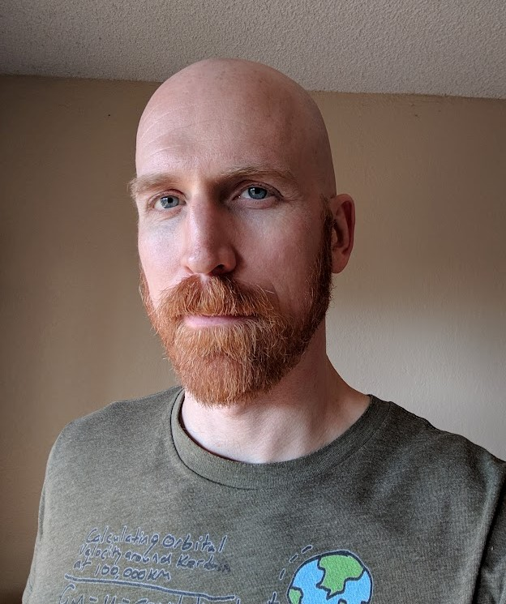

Divii is creating an application marketed to divorce attorneys, which is being designed to create separation agreements. Similar products are available, but require the user to manually perform calculations, such as those for child support payments.
Team SSL is proud to be working with Divii on a child support calculation tool. This tool will acquire the data it requires from provincial government websites, store that data for the Divii application, and perform calculations using that data, along with the user’s input.
Divii’s founder, Rebecca Alleyne, is a Family Lawyer and a Family Law Mediator. In her practice, she found the system of generating separation agreements to be inefficient and in need of a more automated approach. There were tools available, but they were not always accessible for all users and lacked some useful functionality. Rebecca found Bronwen Coulthard and Jason Michaelwood to help build the Divii application.
Completion of the support payment calculation tool is our primary goal of this project, and the following requirements are in-scope:
To accomplish this, the SSL team members are assigned tasks based on their skills and area of interest.
Scott Sinclair is SSL’s Back-End Developer. He is tasked with learning and implementing the data scraper, handling data storage, and creating the calculator. Scott’s skills in software development and his drive to master new technologies has brought him swiftly through the tasks put forth for him.
Scott Jones is SSL’s Front-End Developer and User Experience Designer. He has taken on the task of creating the best possible user experience for Divii’s clients. Scott takes a thoughtful, well-researched approach to presentation of information, and SSL is very fortunate to have his skills.
Lawrence Bierworth is the Project Lead and Technical Writer. His skills are primarily in the organization and documentation fields. Lawrence takes on much of the written assignments for the project and serves as Scrum Master. In doing so, Lawrence maintains a steady and efficient path for SSL to complete the project tasks. Team Members
Scott Sinclair grew up deeply involved with computers and then, pulling a 180, decided to get a bachelor’s degree in English. This was a mistake that he corrected over the course of the Covid lockdowns by enrolling in the Camosun ICS program. There he studied many different languages such as Python, JavaScript, C++, and Java. He has since decided on a permanent career path in technology. In the future, he hopes to help develop the first true artificial intelligence and advance humanity into a golden age beyond the stars.
Scott Jones first became interested in computers and technology to record his music. Drawn to the intersection between creativity and technology, he decided to enroll in the IMD program at Camosun College. At Camosun, Scott has studied a variety of subjects including Web Development, UX Design, Digital Art, Game Development, and Mobile Application Development; he has since developed a deep passion for programming and design. A hard worker and problem solver, Scott is looking forward to new opportunities post-graduation.

Lawrence Bierworth has always had an interest in technology, problem solving, and design. He is in the process of changing careers after serving in the Canadian Forces for twelve years. His strengths at Camosun have been organization, documentation, communication, both written and verbal, and agility when facing challenges. Lawrence brings both the skills he has gained in ICS, and those learned in the military, such as presentation, reporting, analytical skills, and teamwork with a strong mission-first focus.
Team SSL is grateful to have the opportunity to work with Divii and aims to meet the challenge of the project with professionalism and excellence. SSL believes it can meet Divii’s needs and go beyond by the conclusion of the Capstone Project.
Check out team SSL's website here.